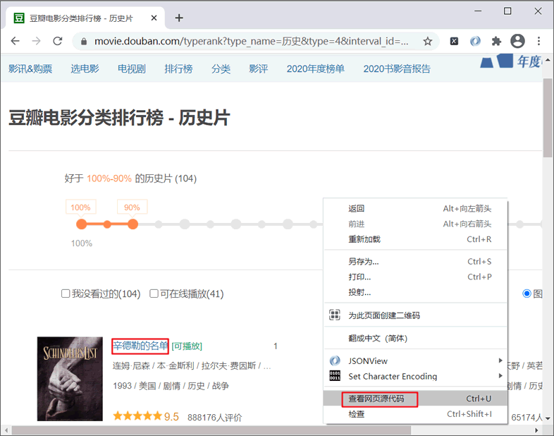
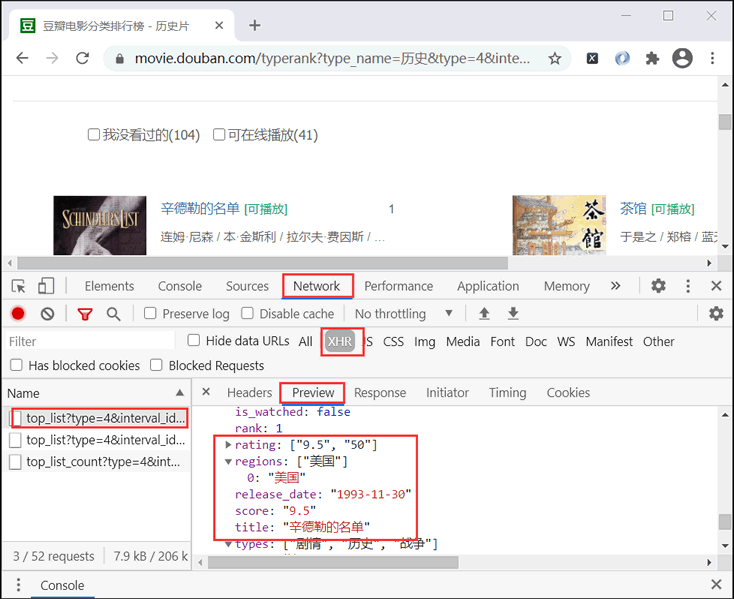
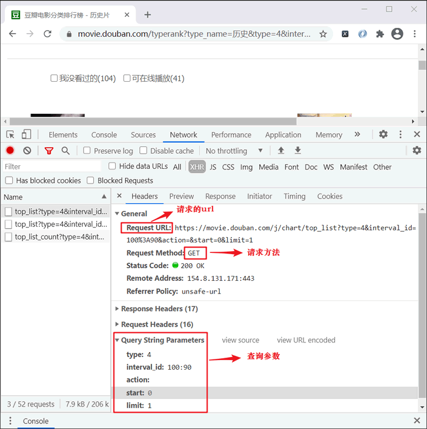
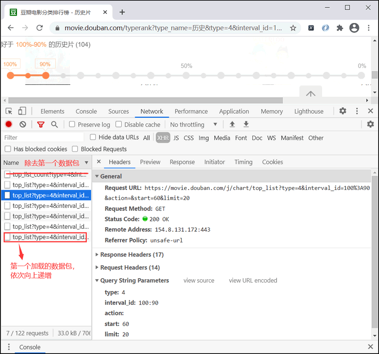
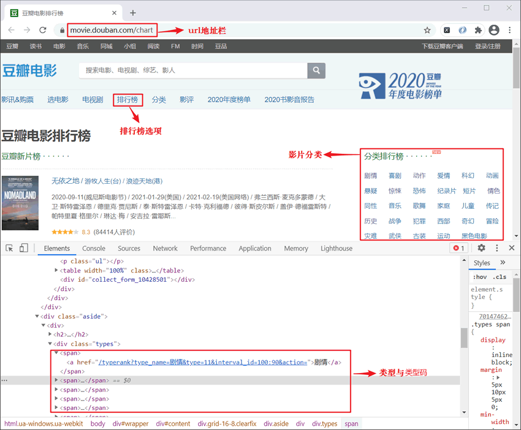

Python爬虫抓取动态加载数据
本节讲解如何抓取豆瓣电影“分类排行榜”中的电影数据（https://movie.douban.com/chart），比如输入“犯罪”则会输出所有犯罪影片的电影名称、评分，效果如下所示：
最终发现源码页中没有出现想要抓取的数据，只有一大堆的 JS 代码，由此确定该网站为动态网站。
从图 2 可知，我们想要抓取的数据取全部包含在当前的数据包中。当我们向下滚动鼠标滑轮时，左侧栏内的数据包会实现自动加载，这是使用 Ajax 异步加载技术实现的。
通过查看数据 Headers 选项可以明确 url 地址、查询参数等信息，如下所示：
剧情|喜剧|动作|爱情|科幻|动画|悬疑|惊悚|恐怖|纪录片|短片|情色|同性|音乐|歌舞|家庭|儿童|传记|历史|战争|犯罪|西部|奇幻|冒险|灾难|武侠|古装|运动|黑色电影|
你想了解什么类型电影:犯罪
{'name': '肖申克的救赎', 'score': 9.7}
{'name': '控方证人', 'score': 9.6}
...
电影总数量：302部
确定网站类型
首先要明确豆瓣电影网站的类型，即是动态还是静态。检查方法：右键查看网页源码 —> 搜索“辛德勒的名单”关键字，如下图所示：

图1：分析网站类型
图1：分析网站类型
最终发现源码页中没有出现想要抓取的数据，只有一大堆的 JS 代码，由此确定该网站为动态网站。
影片详情信息
接下来，使用快捷键 F12 打开控制台进行抓包，点击NetWork选项卡 —>XHR选项 —> Preview选项卡 —> 刷新当前页面抓取数据包，如下图所示：

图2：抓取动态网站数据包
图2：抓取动态网站数据包
从图 2 可知，我们想要抓取的数据取全部包含在当前的数据包中。当我们向下滚动鼠标滑轮时，左侧栏内的数据包会实现自动加载，这是使用 Ajax 异步加载技术实现的。
通过查看数据 Headers 选项可以明确 url 地址、查询参数等信息，如下所示：

图3：分析Headers信息
从上图可以得知请求的基准 URL （由于还未拼接查询参数，所以称之为基准 URL），如下所示：
图3：分析Headers信息
'https://movie.douban.com/j/chart/top_list?'继续滚动鼠标滑轮可知查询参数具有如下规律：
type: 4 # 电影类型 interval_id: 100:90 #代表网页上滑动条的百分比（好于100%-90%的历史片） action: '' # 空 start: 0 # 每次加载电影的起始索引值 0 20 40 60 limit: 20 # 每次加载的电影数量，1为初始值，后续加载时20固定不变注意：寻找规律时，后加载出来的数据包会排在最前面，除去第一个数据包外，其余数据包如下所示：

图4：寻找查询参数值的规律
图4：寻找查询参数值的规律
影片总数量
注意：第一个数据包反映了每个类型中电影的总数量，其 url 与响应信息如下：
请求的URL地址 : https://movie.douban.com/j/chart/top_list_count?type=4&interval_id=100%3A90
Response信息：{"playable_count":41,"total":104,"unwatched_count":104}
影片类型与类型码
影片的类型与类型码包含在电影排行榜的主界面中，如下所示：

图5：影片类型与类型码
分析上述页面结构，然后使用正则表达式来提取想要的数据，并定义选择菜单“menu”，代码如下所示：
图5：影片类型与类型码
import re
def get_all_type_films(self):
# 获取影片类型和类型码
url = 'https://movie.douban.com/chart'
headers = self.get_headers()
html = requests.get(url=url, headers=headers).text
re_bds = r'<a href=.*?type_name=(.*?)&type=(.*?)&.*?</a>'
pattern = re.compile(re_bds, re.S)
r_list = pattern.findall(html)
# 存放所有类型和对应类型码大字典
type_dict = {}
# 定义一个选择电影类型的菜单
menu = ''
# r_list[{'剧情 , 11'},{},..]
for r in r_list:
type_dict[r[0].strip()] = r[1].strip()
# 获取input的菜单，显示所有电影类型
menu += r[0].strip() + '|'
#返回类型字典以供后续函数调用，并返回输入菜单menu
# {'剧情': '11', '喜剧': '24',...}
return type_dict, menu
编写完整程序
完成上述分析后，下面开始编写 Python 爬虫程序，代码如下：
#coding:utf8
import requests
import time
import random
import re
import json
from ua_info import ua_list
class DoubanSpider(object):
def __init__(self):
self.url = 'https://movie.douban.com/j/chart/top_list?'
self.i = 0
# 获取随机headers
def get_headers(self):
headers = {'User-Agent':random.choice(ua_list)}
return headers
# 获取页面
def get_page(self,params):
# 将json转换为 python 数据类型，并返回
html = requests.get(url=self.url,params=params,headers=self.get_headers()).text
html=json.loads(html)
self.parse_page(html)
# 解析并保存数据
def parse_page(self,html):
item = {}
# html列表类型： [{电影1},{电影2},{电影3}...]
for one in html:
# 名称 + 评分
item['name'] = one['title'].strip()
item['score'] = float(one['score'].strip())
print(item)
self.i += 1
# 获取电影总数
def total_number(self,type_number):
# F12抓包抓到的地址，type表示电影类型
url = 'https://movie.douban.com/j/chart/top_list_count?type={}&interval_id=100%3A90'.format(type_number)
headers = self.get_headers()
html = requests.get(url=url,headers=headers).json()
total = int(html['total'])
return total
# 获取所有电影的类型和对应type值
def get_all_type_films(self):
# 获取类型与类型码
url = 'https://movie.douban.com/chart'
headers = self.get_headers()
html = requests.get(url=url,headers=headers).text
re_bds = r'<a href=.*?type_name=(.*?)&type=(.*?)&.*?</a>'
pattern = re.compile(re_bds,re.S)
r_list = pattern.findall(html)
# 存放所有类型和对应类型码大字典
type_dict = {}
#定义一个选择电影类型的菜单
menu = ''
for r in r_list:
type_dict[r[0].strip()] = r[1].strip()
# 获取input的菜单，显示所有电影类型
menu += r[0].strip() + '|'
return type_dict,menu
# 主程序入口函数
def main(self):
# 获取type的值
type_dict,menu = self.get_all_type_films()
menu = menu + '\n你想了解什么类型电影:'
name = input(menu)
type_number = type_dict[name]
# 获取电影总数
total = self.total_number(type_number)
for start in range(0,(total+1),20):
#构建查询参数
params = {
'type' : type_number,
'interval_id' : '100:90',
'action' : '',
'start' : str(start),
'limit' : '20'
}
# 调用函数,传递params参数
self.get_page(params)
# 随机休眠1-3秒
time.sleep(random.randint(1,3))
print('电影总数量:%d部'%self.i )
if __name__ == '__main__':
spider = DoubanSpider()
spider.main()
输出示例：
剧情|喜剧|动作|爱情|科幻|动画|悬疑|惊悚|恐怖|纪录片|短片|情色|同性|音乐|歌舞|家庭|儿童|传记|历史|战争|犯罪|西部|奇幻|冒险|灾难|武侠|古装|运动|黑色电影|
你想了解什么类型电影:科幻
{'name': '盗梦空间', 'score': 9.3}
{'name': '星际穿越', 'score': 9.3}
{'name': '楚门的世界', 'score': 9.3}
{'name': '机器人总动员', 'score': 9.3}
{'name': '蝙蝠侠：黑暗骑士', 'score': 9.2}
{'name': '超感猎杀：完结特别篇', 'score': 9.2}
{'name': '新世纪福音战士 第0:0话 诞生之始', 'score': 9.2}
{'name': '少年骇客：变身之谜', 'score': 9.2}
...
...
电影总数量:147部
最后我们对抓取动态网站数据做简单地总结：
- 1. 确定网站是否为动态网站，通过查看源码搜索相应的关键字即可确定。
- 2. 动态网站主要通过异步方式加载数据。触发数据加载的 JS 事件主要有滚动鼠标滑轮、鼠标点击、拉动滚动条等有关动作， 也有一些网站通过局部更新的方式加载数据，比如有道翻译案例。
关注公众号「站长严长生」，在手机上阅读所有教程，随时随地都能学习。内含一款搜索神器，免费下载全网书籍和视频。

微信扫码关注公众号